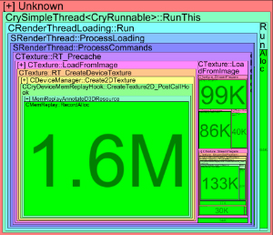
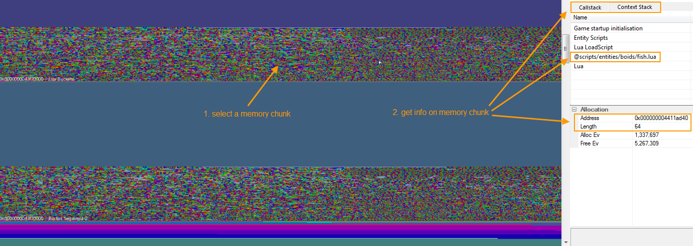

Overview
Chapters:
Inspecting No Frees Analysis
Tools -> Debugging -> No frees analysis
Sometimes you want to figure out which allocations have occurred in a specific frame of time. By using the D-button to get selection details, allocations and frees are both taken into account.
If an allocation has happened outside the scope, but the free is inside, MemReplay will display negative numbers as the following screenshot shows.

Instead of pressing the D-Button you can use No frees analysis. This displays allocations only, which results in a result similar to the following screenshot.

Inspecting Heap
Tools -> Inspect heap
This option generates a graphical representation of the memory heap usage. This can be helpful to find large memory blocks or fragmentation.

Tracing Allocation History
Tools -> Debugging -> Trace allocation history
This option gives an overview as to which allocations, frees and references have affected the memory address specified.
As an example, the following screenshot shows that five allocations and respectively five frees have been performed on memory address 0x0000000060f45290.